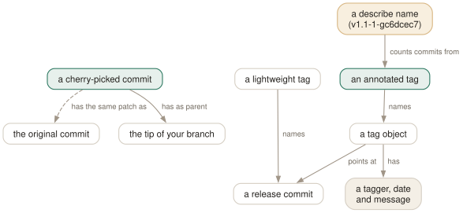

Day 15
Cherry-pick, tags, describe
Copying one commit's change elsewhere, and giving a commit a name that never moves.
By the end of today you can
- backport a fix to a release branch with
cherry-pick -x, and tell afterwards which commits are already there - choose between lightweight and annotated tags, and push, move and delete them without surprising anyone
- turn any commit into a human-readable version string with
git describe
Cherry-pick copies a change, not a commit
git cherry-pick X asks: what did X change relative to its parent? Then it makes that same change on top of HEAD and commits it, reusing X's message and author. The result is a new commit with a new parent, so — by Day 1's rules — a new hash. Nothing in the object store records that the two are related.
$ git switch release-1.x
$ git cherry-pick -x ef9fe6f
[release-1.x a0f2e06] Fix crash on empty input
1 file changed, 1 insertion(+)
$ git log -1 --format=%B
Fix crash on empty input
(cherry picked from commit ef9fe6f573928dc89a7f974fc17a54e935bc4d0c)
-x appends that last line, which is the only durable trace of where the change came from. Use it whenever you pick from a public branch — for backports it is the difference between “is this fix in 1.x?” being a search and being a guess. Leave it off when picking from your own unpublished branches, where the original will disappear.
Because the hashes differ, git compares cherry-picks by patch-id instead: a hash of the diff with line numbers and whitespace ignored. Equal patch-ids mean “same change”:
$ git show ef9fe6f | git patch-id
3c5eb97fe2e9bbe1df3424ee1a5dcc36a36c7145 ef9fe6f573928dc89a7f974fc17a54e935bc4d0c
$ git show a0f2e06 | git patch-id
3c5eb97fe2e9bbe1df3424ee1a5dcc36a36c7145 a0f2e0634760924b5d536f12df9d751be60ff77a
$ git log --oneline --cherry-mark --left-right main...release-1.x
= ef9fe6f Fix crash on empty input
= a0f2e06 Fix crash on empty input
< f837ffa Add feature b

describe, signing and push.followTags look for.When a pick conflicts
A pick is a small merge, so it conflicts when the lines it touches have changed on your branch. git stops, leaves markers as on Day 4, and records the commit it was applying in CHERRY_PICK_HEAD:
$ git cherry-pick main
Auto-merging app.txt
CONFLICT (content): Merge conflict in app.txt
error: could not apply 929255c... Add feature c
$ git status | sed -n 2p
You are currently cherry-picking commit 929255c.
- Resolve,
git addthe files, thengit cherry-pick --continue. git cherry-pick --skipdrops this commit and moves on to the next one in a range.git cherry-pick --abortputs the branch back exactly where it was before the command.
Ranges use Day 7's syntax: git cherry-pick A..B picks everything reachable from B but not from A, oldest first — A itself is not included. A^..B includes it.
Two kinds of tag
A tag is a ref under refs/tags/, like a branch under refs/heads/, with one social difference: it is not supposed to move. There are two kinds, and they are different objects:
$ git tag v1.1-light
$ git tag -a v1.1 -m 'Release 1.1'
$ git cat-file -t v1.1-light
commit
$ git cat-file -t v1.1
tag
$ git cat-file -p v1.1
object 929255cad3cd35a2076669f3366fa32df2428c70
type commit
tag v1.1
tagger Ada Example <ada@example.com> 1790319600 +0200
Release 1.1
- lightweight
- A ref that names a commit directly. No author, no date, no message. A bookmark: “the commit I deployed on Tuesday”.
- annotated
- A ref naming a tag object — Day 1's fourth type — that records the tagger, the time and a message, and can be signed (
-s). Use these for releases.
Tags are not pushed with branches. Push one by name, git push origin v1.1, or set push.followTags (today's config), which sends every annotated tag that points into the history you are pushing and leaves lightweight ones behind. Delete a published one with git push origin --delete v1.1.
Version order, and describe
By default git tag -l sorts by string, so v1.10 comes before v1.2. tag.sort = version:refname fixes that; versionsort.suffix = -rc additionally puts v2.0-rc1 before v2.0 instead of after it:
$ git tag -l | paste -sd' '
v1.10 v1.2 v2.0 v2.0-rc1
$ git -c tag.sort=version:refname -c versionsort.suffix=-rc tag -l | paste -sd' '
v1.2 v1.10 v2.0-rc1 v2.0
git describe goes the other way: from a commit to a name. It finds the nearest annotated tag reachable from HEAD and says how far away you are:
$ git describe
v1.1-1-gc6dcec7
$ echo x >> app.txt && git describe --dirty
v1.1-1-gc6dcec7-dirty
Read it as: tag v1.1, one commit after it, at commit c6dcec7 (the g is for “git”). This is what build scripts embed as a version string, and it is also valid revision syntax — git show v1.1-1-gc6dcec7 works. --tags lets lightweight tags count, --always falls back to a bare abbreviated hash in a repository with no tags, and --abbrev=0 prints just the tag.
Today's habit
Backports get -x, every time. Releases get an annotated tag and are never moved. Add today's two config blocks so the tag list reads in version order and release tags travel with their commits.
Tomorrow: bisect — using the commit graph to find which of five hundred commits broke something, in about nine steps.
New vocabulary
Commands
| Command | Does |
|---|---|
git cherry-pick -x <commit> | Apply one commit's change on top of HEAD as a new commit, noting the original in the message. |
git cherry-pick A..B | Pick every commit in the range, oldest first. A itself is excluded. |
git cherry-pick --continue | --skip | --abort | Resume after resolving, drop the current commit, or return to where you started. |
git log --cherry-mark --left-right A...B | Mark commits on each side with = when the other side has an equivalent patch. |
git tag -a v1.2 -m <msg> [<commit>] | Create an annotated tag: a tag object with tagger, date and message. |
git tag v1.2 [<commit>] | Create a lightweight tag: just a ref. |
git tag -l 'v1.*' | List tags matching a glob. |
git push origin <tag> | Publish one tag. Tags are not pushed with branches by default. |
git push origin --delete <tag> | Delete a tag on the remote. |
git describe [--tags] [--dirty] [--always] | Name HEAD relative to the nearest annotated tag, e.g. v1.1-1-gc6dcec7. |
Options
| Option | Does |
|---|---|
tag.sort | Default ordering for git tag -l; version:refname sorts v1.10 after v1.9. |
push.followTags | Also push annotated tags that point into the history being pushed. |
Today's configappend to ~/.gitconfig
List tags in version order, not string order: v1.9 before v1.10, and a release candidate before its release (versionsort.suffix).
[tag]
sort = version:refname
[versionsort]
suffix = -rc
Push annotated tags along with the commits they point at, so a release tag cannot be forgotten. Lightweight tags stay local, which is what they are for.
[push]
followTags = true
git reads its config afresh on every command, so there is nothing to reload. Check what is in force, and which file it came from, with git config list --show-origin.
Drillsdo these in a real terminal, today
Self-check
Answer out loud first, then unfold.
You cherry-picked a fix onto the release branch. Later, merging main into it, you expect a conflict and get none, and the fix appears once. Yet git log release shows two commits with the same message. Explain.
A cherry-pick is a new commit: same change, same message and author, but a different parent and committer time, so a different hash. git does not record that the two are related (except as text, if you used -x). When you merge, the three-way merge sees both sides made the same change to the same lines and takes it once — no conflict, but history holds both commits.
To see which commits are equivalent, compare patches, not hashes: git log --cherry-mark --left-right A...B marks them =, using the same patch-id git patch-id computes.
git describe on a fresh checkout says “No annotated tags can describe…”, but git tag lists v2.0. What is going on?
v2.0 is a lightweight tag — a plain ref with no tag object — and describe considers only annotated tags by default, on the theory that lightweight ones are private bookmarks. git describe --tags uses both. The real fix is to make release tags annotated, which also records who tagged, when, and why.
You deleted a mistaken tag on the server with git push origin --delete v3.0. The next day it is back. Who pushed it?
Possibly you. Deleting a remote tag does nothing to the copies in every clone. With push.followTags set, the next git push from any clone that still has v3.0 — and whose pushed history contains its commit — sends it again. Delete it locally too (git tag -d v3.0) and tell everyone else to do the same, or to run git fetch --prune --prune-tags — which also deletes any tag of their own the remote lacks. Without --prune, --prune-tags does nothing.
The maintainer moved v3.1 to a different commit and force-pushed it. Your git fetch --tags prints ! [rejected] v3.1 -> v3.1 (would clobber existing tag). Why does git refuse?
Because a tag is a promise that a name means one commit forever, and a fetch that silently changed it would let someone rewrite what “the v3.1 release” is on your machine without your noticing. Branches are expected to move; tags are not. If you do trust the change, git fetch --tags --force accepts it. The better answer is never to move a published tag: tag a v3.1.1 instead.
Cheat sheet
A pick is a new commit with the same patch. A tag is a ref that must not move.
git cherry-pick -x SHA # backport; -x records the source
git cherry-pick A..B # A excluded; A^..B to include it
git cherry-pick --continue | --skip | --abort
git log --cherry-mark --left-right A...B # '=' = equivalent patch
git tag -a v1.2 -m 'Release' # annotated: for releases
git tag wip-deploy # lightweight: a local bookmark
git push origin v1.2 # or push.followTags = true
git push origin --delete v1.2 # others still have it
git describe [--tags] [--dirty] [--always] [--abbrev=0]
Everything through Day 15
Commands
| Command | Does |
|---|---|
git init -b main | Create an empty repository whose first branch is main. |
git hash-object <file> | Print the object name the file's contents would get. Writes nothing without -w. |
git cat-file -t <object> | Print an object's type: blob, tree, commit or tag. |
git cat-file -p <object> | Pretty-print an object's contents. The one command that shows what git really stores. |
git cat-file -s <object> | Print an object's size in bytes. |
git ls-tree -r <tree-ish> | List every blob in a tree, recursively, with mode and hash. |
git rev-parse HEAD | Turn a name into the full hash it currently means. |
git count-objects -v | Count loose and packed objects and the disk they use. |
git status -s | Show each changed path with two columns: index vs HEAD, then working tree vs index. |
git add <path> | Copy the file's current contents into the index. Writes the blob immediately. |
git add -p | Walk through each hunk and choose which ones go into the index. |
git diff | Show what differs between the index and the working tree — what add would stage. |
git diff --staged | Show what differs between HEAD and the index — what commit would record. |
git restore <path> | Overwrite the working-tree file with the index version. Discards unstaged edits. |
git restore --staged <path> | Reset the index entry to HEAD's version. The working tree is untouched. |
git commit [-a] | Turn the index into a tree, wrap it in a commit, move the branch to it. -a first stages every modified tracked file (never untracked ones). |
git rm --cached <path> | Remove a path from the index only; the file stays on disk, now untracked. |
git branch | List local branches; * marks the one HEAD names. |
git branch -v | List branches with the commit each points at and its subject line. |
git branch <name> | Create a branch at HEAD without switching to it. |
git switch <branch> | Point HEAD at a branch and update the index and working tree to its commit. |
git switch -c <name> | Create a branch at HEAD and switch to it in one step. |
git switch - | Switch back to the branch you were on before. |
git switch --detach <commit> | Point HEAD directly at a commit, with no branch in between. |
git branch -d <name> | Delete a branch, refusing unless it is merged into its upstream (or into HEAD, if it has none). |
git branch -D <name> | Delete a branch unconditionally. |
git branch -m <old> <new> | Rename a branch. |
git merge <branch> | Bring the branch's history into the current one: fast-forward if possible, else a merge commit. |
git merge --ff-only <branch> | Merge only if it is a fast-forward; otherwise refuse and change nothing. |
git merge --no-ff <branch> | Always create a merge commit, even when a fast-forward was possible. |
git merge --abort | Give up a conflicted merge and restore the state before it started. |
git merge-base A B | Print the best common ancestor of two commits — the version a merge compares against. |
git ls-files -u | List the unmerged index entries: one line per stage per conflicted path. |
git show :1:<path> | Show the base version of a conflicted file. :2: is yours, :3: theirs. |
git checkout --conflict=merge <path> | Recreate the conflict markers in a file you mangled; =zdiff3 works too. |
git clone <url> | Copy a repository: all objects, its branches as origin/*, and one local branch checked out. |
git remote -v | List remotes with their fetch and push URLs. |
git remote add <name> <url> | Register another repository under a short name. |
git fetch | Download new objects and move the remote-tracking refs. Never touches your branches or files. |
git pull | Fetch, then integrate the upstream into the current branch. |
git push | Send the current branch's commits and move the branch of the same name on the remote. |
git push -u origin <branch> | Push and record origin/<branch> as this branch's upstream. |
git push origin --delete <branch> | Delete a branch on the remote. |
git branch -vv | List branches with their upstream and ahead/behind counts. |
git log --oneline --graph --all | Draw every branch's history, one line per commit. |
git log -p | Show each commit's diff against its parent. |
git log --stat | Show which files each commit touched, and how much. |
git log --author=<re> --since=<date> | Keep only commits whose author matches, from a date onwards. |
git log -- <path> | Keep only commits that changed the path. The -- separates paths from revisions. |
git log --follow -- <file> | Follow one file's history back through renames. |
git log -S<string> | Pickaxe: keep commits that change how many times the string occurs. |
git log -G<regex> | Keep commits whose diff adds or removes a line matching the regex. |
git log -L :<func>:<file> | Show the history of one function (or -L 10,20:file for a line range). |
git show <commit> | Show one commit: message and diff. |
git blame -w -C <file> | Annotate each line with its last commit, ignoring whitespace and seeing moves between files. |
git rev-parse --verify <rev> | Resolve an expression to one object name, or fail. The checker for everything today. |
git rev-parse --abbrev-ref <rev> | Print the short ref name an expression means: @{u} becomes origin/main. |
git rev-parse --symbolic-full-name <rev> | Print the full ref name, e.g. refs/remotes/origin/main. |
git log A..B | List commits reachable from B but not from A: what B has that A lacks. |
git log --left-right A...B | List commits on either side but not both, marked < or >. |
git diff A...B | Diff from the merge base of A and B to B: what B changed since they split. |
git show <rev>:<path> | Print a file as it was in any commit, without checking anything out. |
git show :<path> | Print the version of a file currently staged in the index. |
git commit --amend | Replace the last commit with a new one built from the current index. Opens the editor. |
git commit --amend --no-edit | Amend, keeping the message: for the file you forgot to add. |
git reset --soft <rev> | Move the branch to rev. Index and working tree untouched. |
git reset <rev> | Move the branch and reset the index to it (--mixed, the default). Working tree untouched. |
git reset --hard <rev> | Move the branch, and overwrite index and working tree to match. Destroys uncommitted work. |
git reset -- <path> | Copy path from HEAD into the index: unstage. The branch does not move. |
git restore --source=<rev> <path> | Overwrite a working-tree file with its version from any commit. |
git revert <commit> | Make a new commit that undoes commit. The safe undo for published history. |
git clean -n | List the untracked files -f would delete. Add -d for directories, -x for ignored files. |
git clean -fd | Delete untracked files and directories. Ignored files survive unless -x. |
git rebase <upstream> | Replay the commits in <upstream>..HEAD on top of upstream. With no argument, uses @{u}. |
git rebase --onto <new> <old> [<branch>] | Replay <old>..<branch> on top of new: transplant part of a branch. |
git rebase --continue | After resolving and git adding a conflict, commit it and go on. |
git rebase --skip | Drop the commit that stopped, and go on. |
git rebase --abort | Put the branch back exactly where it was before the rebase started. |
git push --force-with-lease | Overwrite the remote branch only if it is still where your remote-tracking branch says. |
git push --force-if-includes | With the lease: also refuse if the remote tip was fetched but never integrated locally. |
git rebase -i <base> | Open the todo list for <base>..HEAD in your editor, then run it. |
git rebase --edit-todo | Re-open the remaining todo list while a rebase is stopped. |
git commit --fixup=<commit> | Commit the staged change as fixup! <subject>, to be melted into commit later. |
git commit --fixup=amend:<commit> | Like --fixup, but the squash also replaces the target's message. |
git rebase -i --autosquash <base> | Move every fixup!/squash!/amend! commit under its target and mark it. |
git rebase -x '<cmd>' <base> | Run cmd after every replayed commit; stop at the first failure. |
git range-diff <base> <old> <new> | Pair up the commits of two versions of a branch and show how each changed. |
git reflog | List where HEAD has pointed, newest first, as HEAD@{n} entries. Short for git reflog show HEAD. |
git reflog show <branch> | List where one branch has pointed. Its entries are <branch>@{n}. |
git reflog --date=iso | Show each entry's time instead of its index: main@{2026-09-25 09:00:00 +0200}. |
git log -g | Walk a reflog with the full git log formatting options. |
git reset --hard ORIG_HEAD | Undo the last reset, merge or rebase: go back to where it started. |
git branch <name> <commit> | Give a recovered commit a name again, so it is safe for good. |
git fsck --unreachable | List objects nothing refers to — not even a reflog. Where dropped stashes are found. |
git config list --show-origin --show-scope | List every setting in effect, with the file and scope it came from. |
git config get <name> | Print the value git will use. Exit status 1 if unset. |
git config set [--global] <name> <value> | Write a setting, to the repository's .git/config unless told otherwise. |
git config unset [--global] <name> | Remove a setting from one file. Exit status 5 if it was not there. |
git config edit --global | Open ~/.gitconfig in your editor. |
git -c <name>=<value> <cmd> | Override one setting for one command, above every file. |
git help <alias> | Print what an alias expands to. |
git stash push -m <msg> | Save staged and unstaged changes to tracked files as a stash entry, and clean the tree. |
git stash push -u | Include untracked files. -a also takes ignored ones. |
git stash push --staged | Stash only what is in the index. |
git stash list | List entries; stash@{0} is the newest. |
git stash show -p [stash@{n}] | Show an entry as a patch. Add --include-untracked to see its untracked files. |
git stash apply [--index] | Reapply an entry and keep it. --index restores what was staged as staged. |
git stash pop [--index] | Apply, and drop the entry only if it applied cleanly. |
git stash drop [stash@{n}] | Delete one entry. |
git stash branch <name> | Create a branch at the commit the stash was made on, apply it there, drop it. |
git worktree add <path> [-b <new>] [<branch>] | Check out a branch in a new directory that shares this repository. |
git worktree list | List every working tree with its HEAD and branch. |
git worktree remove <path> | Delete a clean worktree. git worktree prune forgets ones you deleted by hand. |
git check-ignore -v <path> | Print the file, line and pattern that decides whether path is ignored. |
git check-ignore -v --no-index <path> | The same for a path that is already tracked. |
git status --ignored | Also list ignored files, marked !!. |
git ls-files -o -i --exclude-standard | List every untracked file the ignore rules are hiding. |
git add -f <path> | Add a file despite an ignore rule. |
git check-attr -a -- <path> | Print every attribute set on a path. |
git ls-files --eol | Show line endings in the index and working tree, and the attribute in force. |
git add --renormalize . | Re-apply the current text/eol attributes to every tracked file in the index. |
git archive HEAD | Write a tarball of a commit, leaving out export-ignore paths. |
git cherry-pick -x <commit> | Apply one commit's change on top of HEAD as a new commit, noting the original in the message. |
git cherry-pick A..B | Pick every commit in the range, oldest first. A itself is excluded. |
git cherry-pick --continue | --skip | --abort | Resume after resolving, drop the current commit, or return to where you started. |
git log --cherry-mark --left-right A...B | Mark commits on each side with = when the other side has an equivalent patch. |
git tag -a v1.2 -m <msg> [<commit>] | Create an annotated tag: a tag object with tagger, date and message. |
git tag v1.2 [<commit>] | Create a lightweight tag: just a ref. |
git tag -l 'v1.*' | List tags matching a glob. |
git push origin <tag> | Publish one tag. Tags are not pushed with branches by default. |
git push origin --delete <tag> | Delete a tag on the remote. |
git describe [--tags] [--dirty] [--always] | Name HEAD relative to the nearest annotated tag, e.g. v1.1-1-gc6dcec7. |
Options
| Option | Does |
|---|---|
user.name / user.email | Set the identity written into every commit's author and committer lines. |
init.defaultBranch | Name the first branch of every new repository. |
commit.verbose | Show the staged diff below the message in the commit editor. |
branch.sort | Set the default order of git branch; -committerdate puts recent work first. |
merge.conflictStyle | Choose the marker style: merge (default), diff3 or zdiff3. |
pull.ff | only: let git pull fast-forward and refuse anything else. |
push.autoSetupRemote | Make a plain git push of a new branch create it upstream and track it. |
fetch.prune | Delete remote-tracking refs whose branch was deleted on the remote, on every fetch. |
diff.colorMoved / diff.colorMovedWS | Colour moved blocks differently from added and removed ones; allow-indentation-change still recognises a re-indented move. |
push.useForceIfIncludes | Make every --force-with-lease behave as if --force-if-includes were given. |
rebase.autoSquash | Make rebase -i autosquash by default. Interactive mode only. |
rebase.updateRefs | Also move any branch that points into the rebased range (--update-refs). |
gc.reflogExpire | Age after which reflog entries are pruned. Default 90 days. |
gc.reflogExpireUnreachable | Same, for entries no longer reachable from the ref's tip. Default 30 days. |
core.logAllRefUpdates | Whether reflogs are kept. True by default with a working tree, false in a bare repository. |
includeIf."gitdir:<dir>/".path | Read another config file only for repositories under dir. |
alias.<name> | Define git <name>. A leading ! makes it a shell command. |
GIT_CONFIG_GLOBAL | Read this file instead of ~/.gitconfig; /dev/null for none. |
GIT_PREFIX | Set for shell aliases: the directory you ran them from, relative to the top level. |
core.excludesFile | Your personal ignore file. Defaults to ~/.config/git/ignore — usually leave it. |
diff.<driver>.textconv | A program that turns a file into text for diffs, used by paths with diff=driver. |
tag.sort | Default ordering for git tag -l; version:refname sorts v1.10 after v1.9. |
push.followTags | Also push annotated tags that point into the history being pushed. |